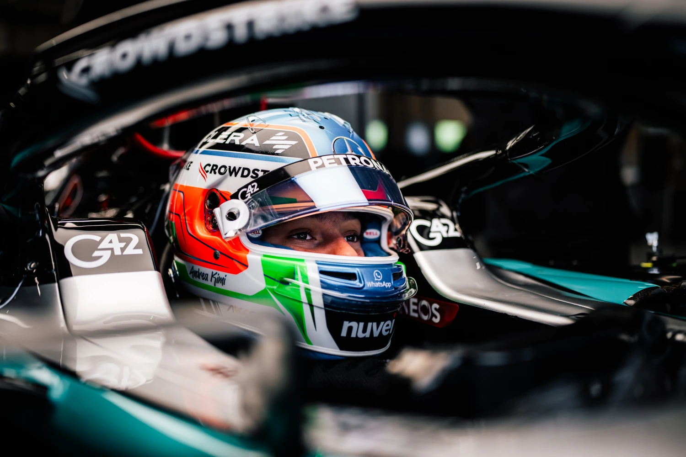
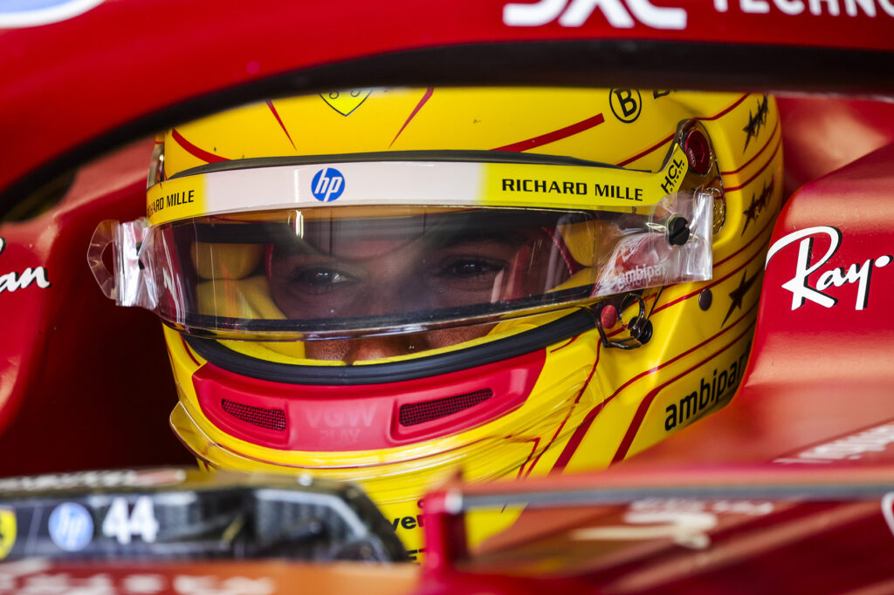
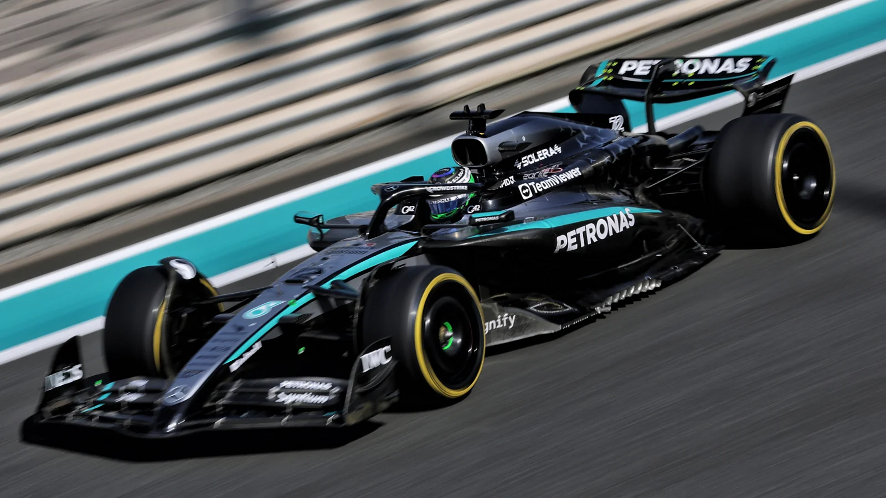
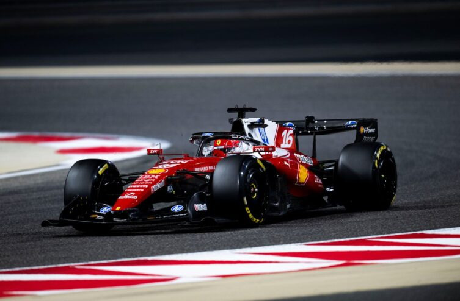
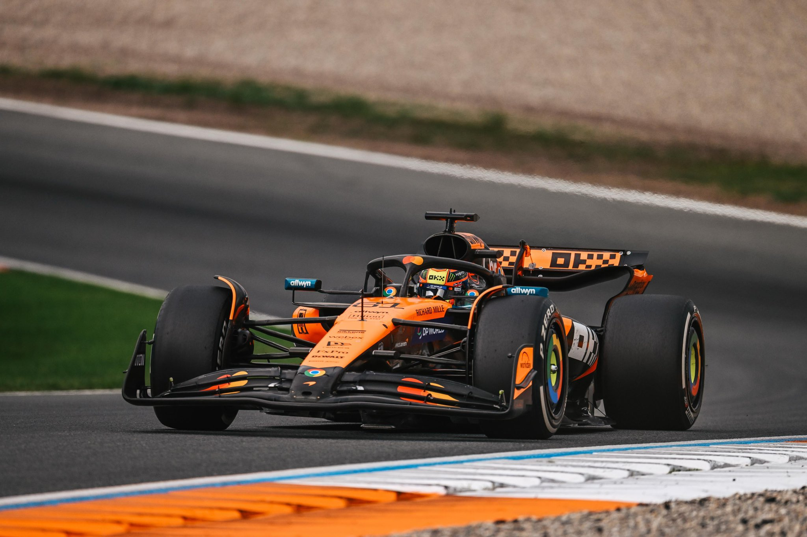

ROUND 8 / 22
2026 Season · Next Up
🇦🇹
Austrian
Grand Prix
Red Bull Ring · Austria · 28 Jun 2026
Permanent
DF 40
PWR 78
Tyre 55
3 DRS · 10 turns
Lights out in
Planet Labs, Inc. · CC BY-SA 4.0 · Wikimedia
156PTS
Championship Leader
🇮🇹 Andrea Kimi Antonelli
P1
Last Winner · Barcelona
🇬🇧 Lewis Hamilton
42% TITLE
Predicted Champion
🇮🇹 Andrea Kimi Antonelli
Drivers' Championship
Top three on the road · after 7 rounds

1ST PLACE
Mercedes
156PTS
🇮🇹 Andrea Kimi Antonelli

2ND PLACE
Ferrari
115PTS
🇬🇧 Lewis Hamilton

3RD PLACE
Mercedes
106PTS
🇬🇧 George Russell
Full standings · all 22 drivers →
| Pos | +/– | Driver | Country | Team | Podiums | Wins | Points |
|---|---|---|---|---|---|---|---|
| 1 | – | Andrea Kimi Antonelli | 🇮🇹 Italian | Mercedes | 6 | 5 | 156 |
| 2 | – | Lewis Hamilton | 🇬🇧 British | Ferrari | 4 | 1 | 115 |
| 3 | – | George Russell | 🇬🇧 British | Mercedes | 3 | 1 | 106 |
| 4 | – | Charles Leclerc | 🇲🇨 Monegasque | Ferrari | 2 | 0 | 75 |
| 5 | ▲1 | Lando Norris | 🇬🇧 British | McLaren | 2 | 0 | 73 |
| 6 | ▼1 | Oscar Piastri | 🇦🇺 Australian | McLaren | 2 | 0 | 68 |
| 7 | – | Max Verstappen | 🇳🇱 Dutch | Red Bull | 1 | 0 | 55 |
| 8 | – | Pierre Gasly | 🇫🇷 French | Alpine | 1 | 0 | 41 |
| 9 | – | Isack Hadjar | 🇫🇷 French | Red Bull | 0 | 0 | 34 |
| 10 | – | Liam Lawson | 🇳🇿 New Zealander | RB | 0 | 0 | 28 |
| 11 | – | Oliver Bearman | 🇬🇧 British | Haas | 0 | 0 | 18 |
| 12 | – | Franco Colapinto | 🇦🇷 Argentine | Alpine | 0 | 0 | 16 |
| 13 | – | Arvid Lindblad | 🇬🇧 British | RB | 0 | 0 | 13 |
| 14 | – | Carlos Sainz | 🇪🇸 Spanish | Williams | 0 | 0 | 6 |
| 15 | – | Alexander Albon | 🇹🇭 Thai | Williams | 0 | 0 | 5 |
| 16 | – | Esteban Ocon | 🇫🇷 French | Haas | 0 | 0 | 3 |
| 17 | – | Gabriel Bortoleto | 🇧🇷 Brazilian | Audi | 0 | 0 | 2 |
| 18 | – | Fernando Alonso | 🇪🇸 Spanish | Aston Martin | 0 | 0 | 1 |
| 19 | – | Nico Hülkenberg | 🇩🇪 German | Audi | 0 | 0 | 0 |
| 20 | – | Valtteri Bottas | 🇫🇮 Finnish | Cadillac | 0 | 0 | 0 |
| 21 | – | Sergio Pérez | 🇲🇽 Mexican | Cadillac | 0 | 0 | 0 |
| 22 | – | Lance Stroll | 🇨🇦 Canadian | Aston Martin | 0 | 0 | 0 |
Constructors' Championship
The teams' title fight

1ST PLACE
6 wins '26
262PTS
Mercedes

2ND PLACE
1 wins '26
190PTS
Ferrari

3RD PLACE
0 wins '26
141PTS
McLaren
Full standings · all 11 teams →
| Pos | +/– | Team | Country | Podiums | Wins | Points |
|---|---|---|---|---|---|---|
| 1 | – | Mercedes | 🇩🇪 German | 9 | 6 | 262 |
| 2 | – | Ferrari | 🇮🇹 Italian | 6 | 1 | 190 |
| 3 | – | McLaren | 🇬🇧 British | 4 | 0 | 141 |
| 4 | – | Red Bull | 🇦🇹 Austrian | 1 | 0 | 89 |
| 5 | – | Alpine | 🇫🇷 French | 1 | 0 | 57 |
| 6 | – | RB | 🇮🇹 Italian | 0 | 0 | 41 |
| 7 | – | Haas | 🇺🇸 American | 0 | 0 | 21 |
| 8 | – | Williams | 🇬🇧 British | 0 | 0 | 11 |
| 9 | – | Audi | 🇩🇪 German | 0 | 0 | 2 |
| 10 | – | Aston Martin | 🇬🇧 British | 0 | 0 | 1 |
| 11 | – | Cadillac | 🇺🇸 American | 0 | 0 | 0 |
From the Paddock
Latest F1 headlines · scroll for more →
F1 News
As Lewis Hamilton finally scores his first Ferrari F1 win, who took even longer?
Sat, 20 Jun 2026 · motorsport.com ↗
F1 News
Lewis Hamilton makes Milan Fashion Week appearance after Ferrari F1 win
Sat, 20 Jun 2026 · motorsport.com ↗
F1 News
Oliver Bearman admits "wrong mindset" was behind difficult start to F1 rookie season
Sat, 20 Jun 2026 · motorsport.com ↗
F1 News
Pierre Gasly Monaco GP podium decision draws fierce Guenther Steiner criticism
Sat, 20 Jun 2026 · motorsport.com ↗
F1 News
James Vowles: Drivers would tell me if they were considering other F1 options
Sat, 20 Jun 2026 · motorsport.com ↗
F1 News
Lewis Hamilton Ferrari win draws Michael Schumacher comparison after Barcelona F1 victory
Fri, 19 Jun 2026 · motorsport.com ↗
F1 News
Claire Williams: George Russell deserves F1 title but bad luck may stick
Fri, 19 Jun 2026 · motorsport.com ↗
F1 News
Oliver Bearman credits Ferrari relocation for rapid F1 maturity
Fri, 19 Jun 2026 · motorsport.com ↗
F1 News
Guenther Steiner delivers brutal Aston Martin verdict: "Not F1 standards anymore"
Fri, 19 Jun 2026 · motorsport.com ↗
F1 News
Jack Doohan no longer cares what other people think after F1 hardship
Fri, 19 Jun 2026 · motorsport.com ↗